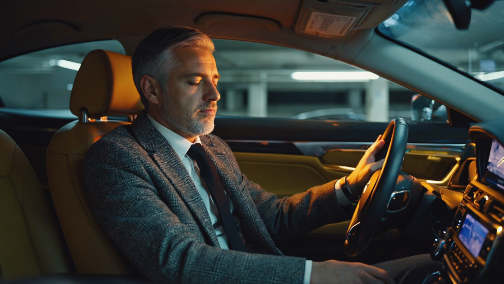

Гайд для тех, у кого всё повторяется
Разговор ещё впереди, а ты уже знаешь, чем он кончится. Твоя реплика, его ответ, хлопок двери: всё по написанному. Ниже разберём, кто это написал.
Дочитай до конца. Развидеть это уже не получится.
Сцена первая
Не абстрактно. Конкретную. Кухня или машина, вечер, усталость. Одна фраза цепляет другую, и вот вы уже там же, где были в прошлый раз. И в позапрошлый.
Самое странное в этой сцене даже не сам повтор. Причём почувствовал ты его заранее: внутри что-то успело шепнуть «сейчас начнётся». И началось. Ты смотрел кино, которое уже видел, и не смог выключить.
Если бы это касалось только ссор. Присмотрись, тот же повтор идёт по всем главным линиям:
Был лучший месяц за год. Сразу за ним провальный, будто кто-то выровнял счёт. Доход годами крутится вокруг одной цифры, и ты её знаешь с точностью до сотни тысяч.
Люди меняются, город меняется, а финал знакомый: сначала «наконец-то другой человек», потом те же обиды, те же паузы в переписке, тот же холод. Как будто партнёров подбирает кто-то один и тот же.
Вечер. Дела закрыты, все получили своё. Сидишь в машине на паркинге, двигатель заглушен, и выходить не хочется. Наверху ждут. А у тебя внутри пусто, и об этом некому сказать.
Будильник. Мысли включились раньше глаз. Кофе, дорога, встречи, вернулся, хотел заняться своим, не занялся. Телефон, злость на себя, сон. Повтор. Неделя. Месяц. Год.
Узнал хотя бы одну сцену? Тогда у меня к тебе вопрос, с которого всё начинается: если ты каждый раз решаешь по-новому, почему получается одно и то же?

Что ты уже пробовал
Напрашивается вывод: «со мной что-то не так». Он неверный. Бил ты точно, просто мимо этажа. Всё перечисленное работает со словами и пониманием. А то, что запускает твои повторы, живёт ниже слов. Сейчас покажу.
Механизм
Когда-то давно, чаще всего в детстве, с тобой случилось событие. Ты пережил его с сильной эмоцией и прямо там, не советуясь с тобой взрослым, принял решение: «злиться опасно», «просить стыдно», «любовь надо заслужить», «богатые плохие», «я сам, на других надежды нет».
Решение записалось: в тело, в реакции, в интонацию, с которой ты сегодня отвечаешь жене, партнёру, сыну, инвестору. Психологи зовут это сценарием. Мы в школе зовём проще: старая запись.
Самое неприятное в этой петле то, что она быстрее тебя. Нейробиолог Джозеф ЛеДу показал: сигнал угрозы доходит до миндалины, аварийного центра мозга, за двенадцать миллисекунд. Осмысленная, думающая кора получает его позже и уже подкрашенным. Дэниел Гоулман назвал это захватом: в момент вспышки разумная часть буквально приглушается.
Запись не спорит с тобой. Она просто успевает раньше. Поэтому «взять себя в руки» не срабатывает: к моменту, когда ты вспомнил про руки, реплика уже сказана.
Найди себя
Запись у каждого своя, но крутится она по похожим дорожкам. Вот четыре самых частых на наших группах. Читай и отмечай, где кольнуло.
Просить запрещено записью. Помощь равна слабости. Вокруг люди, а опереться не на кого, потому что ты сам никого не подпустил. Усталость копится годами и зовётся «нормальным ритмом».
Всем всё дала: дому, детям, его делу. Своё «потом» откладывается двадцать лет. Внутри тихий вопрос «а когда я?», и за него сразу стыдно.
Быт отлажен, календарь общий, разговоры про логистику. Не ссоритесь, потому что незачем. Близость ушла так тихо, что никто не заметил дату.
Бизнес, статус, спортзал, всё по списку. Внутри пусто и тревожно, и чем громче успех, тем страшнее, что «раскроют». Об этом не знает никто. Иногда даже ты.
Похоже на характер, правда? Только вот характер приходится терпеть. Запись переписывается.
Цена
У повтора есть свойство: он дорожает. Первый круг стоит испорченного вечера. Десятый стоит близости: рядом с тобой живут, но уже не открываются. Сотый начинает забирать здоровье, потому что тело годами носит то, что нельзя положить на пол.
Дети выучивают твою запись наизусть, просто глядя на тебя, и уносят её в свои будущие семьи. Дело буксует на том же обороте: расти дальше запись не разрешает, у неё другая инструкция.
И здесь важно сказать главное. Ты не ленивый, не слабый и не сломанный. Двадцать, тридцать, сорок лет ты честно исполняешь решение, принятое ребёнком в плохой день. Ребёнок выбрать не мог. Взрослый может.
Почему слова не достают
Теперь понятно, почему книги и разговоры не сработали: они стучались в думающий этаж. Запись хранится этажом ниже, в эмоции и теле. Договариваться с ней словами то же самое, что уговаривать плёнку звучать иначе. Плёнке всё равно, она просто играет, что записано.
Перезаписывают её там же, где записали: в живой сцене, с живой эмоцией. Для этого сто лет назад психиатр Якоб Морено придумал психодраму: человек не рассказывает о ситуации, а возвращается в неё, проживает заново, видит с позиций других участников и прямо внутри сцены принимает другое решение. Морено называл это спонтанностью: способностью дать новый ответ на старую ситуацию.
Такой опыт невозможно получить из текста. Его можно только прожить. Текст способен на меньшее, но важное: показать тебе твою запись. Что он, надеюсь, уже сделал.
Проверь себя
До двух: запись есть, но пульт чаще у тебя. Три и больше: запись водит тебя по кругу регулярно. От шести: ты читаешь этот текст очень вовремя.
Что дальше
Один из наших учеников сказал об этом моменте так: «появилось ощущение, что вижу себя на всей шахматной доске, а не в одной клетке». Мы добавим прозой: жизнь перестаёт случаться с тобой и начинает идти от тебя.
Где это делают
Мы 16 лет ведём людей через перезапись сценариев. Очно, в малых группах от 10 до 20 человек, глубоко. Никаких лекций: работа в живых процессах, включая психодраму, с сопровождением после.
Начало всегда одно: ознакомительная сессия с Алексеем. Час разговора о твоей ситуации, честный ответ, чем школа может помочь и подходит ли она тебе вообще. Без обязательств идти дальше.
Последняя страница
Каждый день, прожитый по ней, делает колею глубже: нейронные дорожки укрепляются от повторения. Поэтому спрашивать «нужно ли с этим что-то делать» уже поздно. Живой вопрос другой: сколько ещё кругов ты готов оплатить.
Записаться на ознакомительную сессию
Напиши в наш Telegram слово «сессия». Ответим лично, без ботов и рассылок.